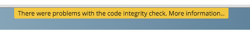

Code Signing¶
ownCloud supports code signing for the core releases, and for ownCloud applications. Code signing gives our users an additional layer of security by ensuring that nobody other than authorized persons can push updates.
It also ensures that all upgrades have been executed properly, so that no files are left behind, and all old files are properly replaced. In the past, invalid updates were a significant source of errors when updating ownCloud.
FAQ¶
Why Did ownCloud Add Code Signing?¶
By supporting Code Signing we add another layer of security by ensuring that nobody other than authorized persons can push updates for applications, and ensuring proper upgrades.
Do We Lock Down ownCloud?¶
The ownCloud project is open source and always will be. We do not want to make it more difficult for our users to run ownCloud. Any code signing errors on upgrades will not prevent ownCloud from running, but will display a warning on the Admin page. For applications that are not tagged “Official” the code signing process is optional.
Not Open Source Anymore?¶
The ownCloud project is open source and always will be. The code signing process is optional, though highly recommended. The code check for the core parts of ownCloud is enabled when the ownCloud release version branch has been set to stable.
For custom distributions of ownCloud it is recommended to change the release version branch in version.php to something else than “stable”.
Is Code Signing Mandatory For Apps?¶
Code signing is optional for all third-party applications. Applications with a tag of “Official” on apps.owncloud.com require code signing.
Fixing Invalid Code Integrity Messages¶
A code integrity error message (“There were problems with the code integrity check. More information…”) appears in a yellow banner at the top of your ownCloud Web interface:
Clicking on this link will take you to your ownCloud admin page, which provides the following options:
- Link to this documentation entry.
- Show a list of invalid files.
- Trigger a rescan.
To debug issues caused by the code integrity check click on “List of invalid files…”, and you will be shown a text document listing the different issues. The content of the file will look similar to the following example:
Technical information
=====================
The following list covers which files have failed the integrity check. Please read
the previous linked documentation to learn more about the errors and how to fix
them.
Results
=======
- core
- INVALID_HASH
- /index.php
- /version.php
- EXTRA_FILE
- /test.php
- calendar
- EXCEPTION
- OC\IntegrityCheck\Exceptions\InvalidSignatureException
- Signature data not found.
Raw output
==========
Array
(
[core] => Array
(
[INVALID_HASH] => Array
(
[/index.php] => Array
(
[expected] =>
f1c5e2630d784bc9cb02d5a28f55d6f24d06dae2a0fee685f3
c2521b050955d9d452769f61454c9ddfa9c308146ade10546c
fa829794448eaffbc9a04a29d216
[current] =>
ce08bf30bcbb879a18b49239a9bec6b8702f52452f88a9d321
42cad8d2494d5735e6bfa0d8642b2762c62ca5be49f9bf4ec2
31d4a230559d4f3e2c471d3ea094
)
[/version.php] => Array
(
[expected] =>
c5a03bacae8dedf8b239997901ba1fffd2fe51271d13a00cc4
b34b09cca5176397a89fc27381cbb1f72855fa18b69b6f87d7
d5685c3b45aee373b09be54742ea
[current] =>
88a3a92c11db91dec1ac3be0e1c87f862c95ba6ffaaaa3f2c3
b8f682187c66f07af3a3b557a868342ef4a271218fe1c1e300
c478e6c156c5955ed53c40d06585
)
)
[EXTRA_FILE] => Array
(
[/test.php] => Array
(
[expected] =>
[current] =>
09563164f9904a837f9ca0b5f626db56c838e5098e0ccc1d8b
935f68fa03a25c5ec6f6b2d9e44a868e8b85764dafd1605522
b4af8db0ae269d73432e9a01e63a
)
)
)
[calendar] => Array
(
[EXCEPTION] => Array
(
[class] => OC\IntegrityCheck\Exceptions\InvalidSignature
Exception
[message] => Signature data not found.
)
)
)
In above error output it can be seen that:
- In the ownCloud core (that is, the ownCloud server itself) the files “index.php” and “version.php” do have the wrong version.
- In the ownCloud core the unrequired extra file “/test.php” has been found.
- It was not possible to verify the signature of the calendar application.
The solution is to upload the correct “index.php” and “version.php” files, and delete the “test.php” file. For the calendar exception contact the developer of the application. For other means on how to receive support please take a look at https://owncloud.org/support/. After fixing these problems verify by clicking “Rescan…”.
Errors¶
The following errors can be encountered when trying to verify a code signature.
INVALID_HASH- The file has a different hash than specified within
signature.json. This usually happens when the file has been modified after writing the signature data.
- The file has a different hash than specified within
MISSING_FILE- The file cannot be found but has been specified within
signature.json. Either a required file has been left out, orsignature.jsonneeds to be edited.
- The file cannot be found but has been specified within
EXTRA_FILE- The file does not exist in
signature.json. This usually happens when a file has been removed andsignature.jsonhas not been updated.
- The file does not exist in
EXCEPTION- Another exception has prevented the code verification. There are currently
these following exceptions:
Signature data not found.`- The app has mandatory code signing enforced but no
signature.jsonfile has been found in itsappinfofolder.
- The app has mandatory code signing enforced but no
Certificate is not valid.- The certificate has not been issued by the official ownCloud Code Signing Root Authority.
Certificate is not valid for required scope. (Requested: %s, current: %s)- The certificate is not valid for the defined application. Certificates are only valid for the defined app identifier and cannot be used for others.
Signature could not get verified.- There was a problem with verifying the signature of
signature.json.
- There was a problem with verifying the signature of
- Another exception has prevented the code verification. There are currently
these following exceptions: